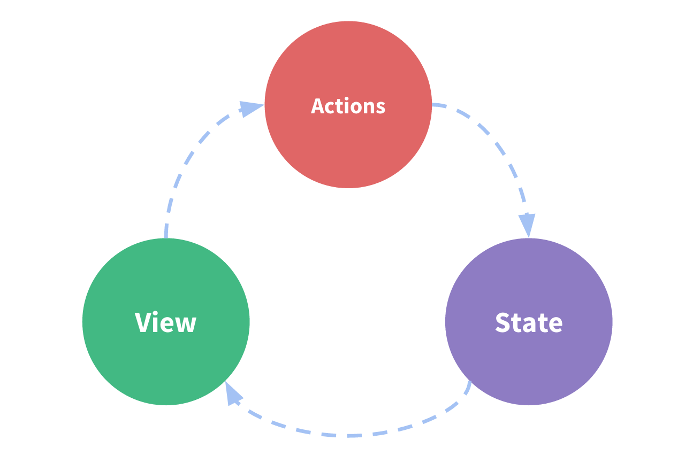
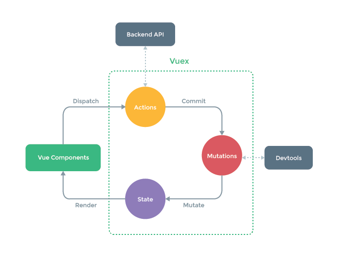

vuex
vuex
vuex是一个专为vue.js应用程序开发的状态管理模式，它采用集中式存储管理应用的所有组件的状态，并且以相应的规则保证状态以一种可预测的方式发生变化。
什么是“状态管理模式”？
从一个简单的 Vue 计数应用开始：
new Vue({
// state
data () {
return {
count: 0
}
},
// view
template: `
<div>{{ count }}</div>
`,
// actions
methods: {
increment () {
this.count++
}
}
})“单向数据流”理念的简单示意：

- state，驱动应用的数据源；
- view，以声明方式将 state 映射到视图；
- actions，响应在 view 上的用户输入导致的状态变化。
当多个组件共享状态时，单向数据流的简洁性很容易被破坏：
- 多个视图依赖于同一状态。
- 来自不同视图的行为需要变更同一状态。
解决方法：把组件的共享状态抽取出来，以一个全局单例模式管理。

如果不打算开发大型单页应用，使用 Vuex 可能是繁琐冗余的。对于简单应用， store 模式 就足够了。
核心概念
每一个 Vuex 应用的核心就是 store（仓库），它包含着应用中大部分的状态 (state)。
Vuex 和单纯的全局对象有以下两点不同：
- Vuex 的状态存储是响应式的。当 Vue 组件从
store中读取状态的时候，若store中的状态发生变化，那么相应的组件也会相应地得到高效更新。 - 不能直接改变
store中的状态。改变store中的状态的唯一途径就是显式地提交 (commit)mutation。这样使得我们可以方便地跟踪每一个状态的变化，从而让我们能够实现一些工具帮助我们更好地了解我们的应用。
创建store，仅需要提供一个初始state对象和mutation：
const store = new Vuex.Store({
state: {
count: 0
},
mutations: {
increment (state) {
state.count++
}
}
})store.state获取状态对象；store.commit方法触发状态变更。
store.commit('increment')
console.log(store.state.count) // 1为了在 Vue 组件中访问 this.$store ，需要为 Vue 实例提供创建好的 store。
new Vue({
el: '#app',
store: store,
})State
vuex使用单一状态树，用一个对象就包含了全部的应用层级状态。
存储在 Vuex 中的数据和 Vue 实例中的 data 遵循相同的规则，例如状态对象必须是纯粹 (plain) 的。参考：Vue#data 。
在 Vue 组件中获得 Vuex 状态
由于 Vuex 的状态存储是响应式的，从 store 实例中读取状态最简单的方法就是在计算属性中返回某个状态。
当一个组件需要获取多个状态的时候，将这些状态都声明为计算属性会有些重复和冗余。为了解决这个问题，我们可以使用 mapState 辅助函数帮助生成计算属性。
// 在单独构建的版本中辅助函数为 Vuex.mapState
import { mapState } from 'vuex'
export default {
// ...
computed: mapState({
// 箭头函数可使代码更简练
count: state => state.count,
// 传字符串参数 'count' 等同于 `state => state.count`
countAlias: 'count',
// 为了能够使用 `this` 获取局部状态，必须使用常规函数
countPlusLocalState (state) {
return state.count + this.localCount
}
})
}当映射的计算属性的名称与 state 的子节点名称相同时，可以给 mapState 传一个字符串数组。
computed: mapState([
// 映射 this.count 为 store.state.count
'count'
])mapState 函数返回的是一个对象。通常需要使用一个工具函数将多个对象合并为一个，将最终对象传给 computed 属性。但是自从有了对象展开运算符，可以极大地简化写法：
computed: {
localComputed () { /* ... */ },
// 使用对象展开运算符将此对象混入到外部对象中
...mapState({
// ...
})
}Getters
Vuex 允许在 store中定义“getter”（可以认为是store 的计算属性）。就像计算属性一样，getter 的返回值会根据它的依赖被缓存起来，且只有当它的依赖值发生了改变才会被重新计算。
Getter 接受 state 作为其第一个参数：
const store = new Vuex.Store({
state: {
todos: [
{ id: 1, text: '...', done: true },
{ id: 2, text: '...', done: false }
]
},
getters: {
doneTodos: state => {
return state.todos.filter(todo => todo.done)
}
}
})通过属性访问
Getter 会暴露为 store.getters 对象，可以以属性的形式访问这些值，
store.getters.doneTodos // [{ id: 1, text: '...', done: true }]Getter 也可以接受其他 getter 作为第二个参数：
getters: {
// ...
doneTodosCount: (state, getters) => {
return getters.doneTodos.length
}
}在任何组件中使用它：
computed: {
doneTodosCount () {
return this.$store.getters.doneTodosCount // 1
}
}getter 在通过属性访问时是作为 Vue 的响应式系统的一部分缓存其中的。
通过方法访问
通过让 getter 返回一个函数，来实现给 getter 传参。在对 store 里的数组进行查询时非常有用。
getters: {
// ...
getTodoById: (state) => (id) => {
return state.todos.find(todo => todo.id === id)
}
}store.getters.getTodoById(2) // { id: 2, text: '...', done: false }getter 在通过方法访问时，每次都会去进行调用，而不会缓存结果。
mapGetters 辅助函数
mapGetters 辅助函数仅仅是将 store 中的 getter 映射到局部计算属性：
import { mapGetters } from 'vuex'
export default {
// ...
computed: {
// 使用对象展开运算符将 getter 混入 computed 对象中
...mapGetters([
'doneTodosCount',
'anotherGetter',
// ...
])
}
}如果将一个 getter 属性另取一个名字，使用对象形式：
...mapGetters({
// 把 `this.doneCount` 映射为 `this.$store.getters.doneTodosCount`
doneCount: 'doneTodosCount'
})Mutation
更改 Vuex 的 store 中的状态的唯一方法是提交 mutation。Vuex 中的 mutation 非常类似于事件：每个 mutation 都有一个字符串的事件类型 (type)和一个回调函数 (handler)。这个回调函数就是我们实际进行状态更改的地方，并且它会接受 state 作为第一个参数：
const store = new Vuex.Store({
state: {
count: 1
},
mutations: {
increment (state) {
// 变更状态
state.count++
}
}
})提交载荷（Payload）
可以向 store.commit 传入额外的参数，即 mutation 的 载荷（payload）
// ...
mutations: {
increment (state, payload) {
state.count += payload.amount
}
}
store.commit('increment', {
amount: 10
})遵守 Vue 的响应规则
mutation 也需要与使用 Vue 一样遵守一些注意事项：
- 最好提前在
store中初始化好所有所需属性。 - 当需要在对象上添加新属性时，应该
- 使用
Vue.set(obj, 'newProp', 123), 或者 - 以新对象替换老对象。例如，利用对象展开运算符
state.obj = { ...state.obj, newProp: 123 }使用常量替代 mutation 事件类型
// mutation-types.js
export const SOME_MUTATION = 'SOME_MUTATION'// store.js
import Vuex from 'vuex'
import { SOME_MUTATION } from './mutation-types'
const store = new Vuex.Store({
state: { ... },
mutations: {
// 使用 ES2015 风格的计算属性命名功能来使用一个常量作为函数名
[SOME_MUTATION] (state) {
// mutate state
}
}
})在需要多人协作的大型项目中，这会很有帮助，但不是必须。
mutation 必须是同步函数
store.commit('increment')
// 任何由 "increment" 导致的状态变更都应该在此刻完成。Action
action 类似于 mutation，不同在于：
action提交的是mutation，而不是直接变更状态。action可以包含任意异步操作。
const store = new Vuex.Store({
...actions: {
increment (context) {
context.commit('increment')
}
}
})action 函数接受一个与 store 实例具有相同方法和属性的 context 对象，可以调用 context.commit 提交一个 mutation，或者通过 context.state 和 context.getters 来获取 state 和 getters。
分发 Action
action 通过 store.dispatch 方法触发：
store.dispatch('increment')在组件中分发 Action
使用
this.$store.dispatch('xxx')分发action；使用
mapActions辅助函数将组件的methods映射为store.dispatch调用：
import { mapActions } from 'vuex'
export default {
// ...
methods: {
...mapActions([
'increment', // 将 `this.increment()` 映射为 `this.$store.dispatch('increment')`
// `mapActions` 也支持载荷：
'incrementBy' // 将 `this.incrementBy(amount)` 映射为 `this.$store.dispatch('incrementBy', amount)`
]),
...mapActions({
add: 'increment' // 将 `this.add()` 映射为 `this.$store.dispatch('increment')`
})
}
}组合Action
store.dispatch 可以处理被触发的 action 的处理函数返回的 Promise，并且 store.dispatch 仍旧返回 Promise：
actions: {
actionA ({ commit }) {
return new Promise((resolve, reject) => {
setTimeout(() => {
commit('someMutation')
resolve()
}, 1000)
})
}
}store.dispatch('actionA').then(() => {
// ...
})actions: {
// ...
actionB ({ dispatch, commit }) {
return dispatch('actionA').then(() => {
commit('someOtherMutation')
})
}
}如果我们利用 async / await 可以如下组合 action：
// 假设 getData() 和 getOtherData() 返回的是 Promise
actions: {
async actionA ({ commit }) {
commit('gotData', await getData())
},
async actionB ({ dispatch, commit }) {
await dispatch('actionA') // 等待 actionA 完成
commit('gotOtherData', await getOtherData())
}
}Modules
Vuex 允许将 store 分割成模块（module）。每个模块拥有自己的 state、mutation、action、getter、甚至是嵌套子模块——从上至下进行同样方式的分割：
const moduleA = {
state: () => ({ ... }),
mutations: { ... },
actions: { ... },
getters: { ... }
}
const moduleB = {
state: () => ({ ... }),
mutations: { ... },
actions: { ... }
}
const store = new Vuex.Store({
modules: {
a: moduleA,
b: moduleB
}
})
store.state.a // -> moduleA 的状态
store.state.b // -> moduleB 的状态模块内部的 mutation 、getter、action，接收的第一个参数是模块的局部状态对象。如果希望使用全局 state 和 getter，rootState 和 rootGetters 会作为第三和第四参数传入 getter，也会通过 context 对象的属性（context.rootState, context.rootGetters）传入 action。
总结
state： 驱动应用的数据源getter： 相当于vue中的computed计算属性mutation： 更改vuex中state的状态的唯一方法就是提交mutationaction：action提交的是mutation，而不是直接变更状态，action可以包含任意异步操作
参考
本博客所有文章除特别声明外，均采用 CC BY-SA 4.0 协议 ，转载请注明出处！